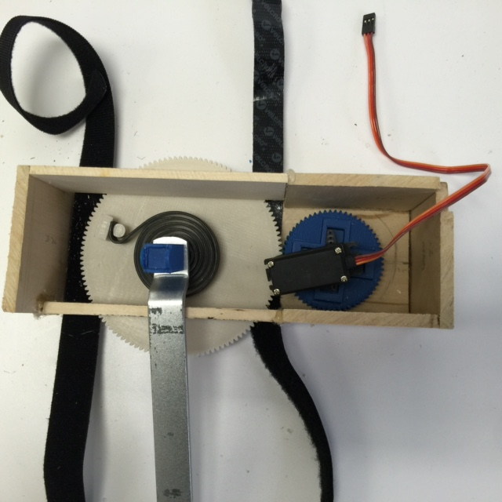

The Project
We call Smart Bracelet: Armisael, but this is a three piece project. This project is designed to use all the three pieces to compute one part of the system. Check the detailed information on each of the pieces listed below.
Smart Bracelet
This is the final prototype of the Smart Bracelet: Armisael.
.jpg) The Smart Bracelet is designed to compute the heart rate from the user, send the data to the mobile application, and notify the user of its data.
The Smart Bracelet is designed to compute the heart rate from the user, send the data to the mobile application, and notify the user of its data.
The Bracelet's heart and mind is the Adafruit Pro Trinket 3V microcontroller. Pro Trinket runs on 12 MHz clock and is enough to process all of our application. Another advantage is the fact that it provides a current output up to 150 mA which is enough for powering the HDC1000, our humidity and temperature sensor. In comparison with regular Trinket or Pro Mini microcontroller, the Pro Trinket provides more pins and its Micro-USB power jack also made a difference for our goals.
 The chosen Heart Rate sensor is called SON1240 and we chose it because of its accuracy and how it gets the pulse readings. It emits light on the surface of the skin and the light penetrates till the blood cells. At the blood cells level, this light will be reflected by the blood; when the heart does not pulse, the intensity of the reflected light is low, and when the heart pulse, the intesity of the reflected light is high. This sensor has two types of outputs: a square wave and a continuous oscillation wave. The square wave would be the best option, easier to measure and understand, but its main problem is that each reflection is not the same. Which leads to different periods of the square wave and sometimes the refelction is not intense enough to compute as a heart beat. Therefore, we chose to use the output in which gives us a continous wave form, this form computes much more accurate each intensity of each reflection. This way, our algorithm can provide a much more accurate measure of the user's heart rate.
The chosen Heart Rate sensor is called SON1240 and we chose it because of its accuracy and how it gets the pulse readings. It emits light on the surface of the skin and the light penetrates till the blood cells. At the blood cells level, this light will be reflected by the blood; when the heart does not pulse, the intensity of the reflected light is low, and when the heart pulse, the intesity of the reflected light is high. This sensor has two types of outputs: a square wave and a continuous oscillation wave. The square wave would be the best option, easier to measure and understand, but its main problem is that each reflection is not the same. Which leads to different periods of the square wave and sometimes the refelction is not intense enough to compute as a heart beat. Therefore, we chose to use the output in which gives us a continous wave form, this form computes much more accurate each intensity of each reflection. This way, our algorithm can provide a much more accurate measure of the user's heart rate.
The Humidity and Temperature sensor we used is the HDC1000. We chose it because of the easy access to it, the simplicity in getting its data and the simplicity of attaching it to our schematic.
 The Bluetooth module is the CC2541 (also known as HM10). We selected this module because of three reasons: good finance outcome (not expensive), simple to configure and to use, and the most imporant it consumes very low power energy. This module is the new series of Bluetooth 4.0 which are also called BLE - Bluetooth Low Energy consumption.
The Bluetooth module is the CC2541 (also known as HM10). We selected this module because of three reasons: good finance outcome (not expensive), simple to configure and to use, and the most imporant it consumes very low power energy. This module is the new series of Bluetooth 4.0 which are also called BLE - Bluetooth Low Energy consumption.
The last piece of the Bracelet is the battery. It uses a 3.7V lithium battery smaller than a quarter. The battery powers the Pro Trinket 3V, BLE and the Heart Rate sensor directly. If you take a close look into our design, you will find that there is a section that contains a board divided in two. This board is the extension of our battery. One side there is Vcc (voltage) and the other side is GND (ground). This structure allows us to use female headers to connect all the pins. Therefore is easy to modify any particular component of hardware of our bracelet.
Our bracelet is designed using velcros and pieces of wood. The wood is mainly used as the band of the bracelet: making it comfortable enough to wear and also avoiding any electrical contact to the user. We two types of velctros: long strips of velcros that are used to go around of the wrist to tighten it, and short pieces of velcros that stick in different components on the wood. In overall our bracelet is very simple to understand and if necessary to change or analyze any specific component, it is very easy to disconnect them.
Exoskeleton
This is the final version of our Exoskeleton.
The Exoskeleton is designed to correspond accordingly with the bracelet's data. The bracelet process the heart rate data and send it to the mobile application via bluetooth. The exoskeleton receives the data from the mobile application and then its servo motor is activated. Depending what type of data is received the servo will turn certain amount of degrees. If the exoskeleton receives heart rate data that is below the target, then the servo motor rotates in the direction which the spring will increase tension. However, if the exoskeleton receives heart rate data that is above the target, then the servo motor rotates in the direction that relieves tension.
 The outside look of the exoskeleton is a 9 x 4 in box made of wood. It is going to be located on the posterior side of the leg. On the inside we have the long metal component that conects the spring to the gear, and then we have the second gear with the servo motor on top of it. Our application for the exoskeleton only needs the servo motor to rotate between 0 and 50 degrees. On top of the box we have the Arduino Uno connected to the servo. We chose Arduino Uno to handle the processing of the Exoskeleton's algorithm because Uno can handle one servo motor without any issues and because it can support the BLE processing within the same system. Right next to the Arduino Uno there is the BLE module (a CC2541 HM10 as well) which is used to transfer data between the mobile application and the exoskeleton. Note that there are two structures: one for the left leg and one for the right leg. Therefore, our entire system contians 2 servo motors, 2 BLE modules, 2 Arduino Unos and 4 gears.
The gears had to be 3D printed because we needed to have good matching and light gears. The servo motor we use is a 15 kg.cm / 208.3 oz.in (at 6V) and 13 kg.cm / 180 oz.in (at 4.8V). This motor provides the necessary torque in order to succesfully compress the spring. Servos with less torque are not good for the spring we are using. In a closer look we can visualize a a bigger gear and a big blue object on top of it. The bigger gear was designed to help the decrease of the needed torque to push the spring. The blue object was 3D printed in order to clip hold on together the spring, gear and the long metal component.
Mobile Application - Android Phone
The Mobile Application is designed transfer the data from the bracelet to the exoskeleton & vice-versa and to compute the decision-making of our system based on the heart rate data received by the bracelet.
The user end application is only related to searching the Bluetooth modules (three in our system). We are using Single-User Single Input Single Output module of communication connection here. Our BLE modules can only support one pairing at a time, and the Android phone utilized also can only connect to one BLE device at a time. Therefore we use our Android phone to connect to each BLE device automatically at given times, and to display the heart rate data, plus comments, to our user. This structure decrease the speed in which the user uses our device, but it can be considered as a safe precaution as well. The application first connects to the Bracelet's BLE and only then it will switch to the right leg BLE and then o the left leg BLE.
 The back end application is where all the decision is being computed. Here the application will take the heart rate (in percentage) data and will analyze. If it meets the target range, then the user will not have any feeling of the exoskeleton increasing or decreasing the tension on its legs. However, if the data is outside the target range, then the data being sent to the exoskeleton will activate the servo motors. If the data is below the target range, then the app will display a message to motivate the user to increase speed. This will be done by activating the servo motors on the exoskeleton to rotate a specific degree amount. If the user's data goes above the target range, then a stop/rest message will be displayed. This is done by activating the servo motor to rotate another specific degree amount.
The back end application is where all the decision is being computed. Here the application will take the heart rate (in percentage) data and will analyze. If it meets the target range, then the user will not have any feeling of the exoskeleton increasing or decreasing the tension on its legs. However, if the data is outside the target range, then the data being sent to the exoskeleton will activate the servo motors. If the data is below the target range, then the app will display a message to motivate the user to increase speed. This will be done by activating the servo motors on the exoskeleton to rotate a specific degree amount. If the user's data goes above the target range, then a stop/rest message will be displayed. This is done by activating the servo motor to rotate another specific degree amount.
 The app is built to be the link between the bracelet and the exoskeleton and also to improve the efficiency of each component.
The app is built to be the link between the bracelet and the exoskeleton and also to improve the efficiency of each component.
Accomplishments
This section we will our comments towards the accomplishments we achieved from what we initially proposed to the School of Engineering of the New York Institute of Technology.
Our first and most important achievement was to fully build and develop the smart bracelet prototype. We made a futuristic design when we first designed the virtual version of the bracelet. Our change was due to we condensed all the necessary components together, plus we designed using a good but not accessable material. We changed to the material we had access too and we left our components more spread. The reason is because since we did not have many spare components we could not focus on making as small as possible. In the end we did have a very comfortable and functional prototype.
Another huge accomplishment was the development of the exoskeleton. We were able to come up with a structure that was feasible to build and would not bother the user. As part of this achievement is the fact that we were able to find spiral springs and servo motors with high torque since most on the market has very little torque (4 lb.in or 4 kg.cm). To be able to find these components really helped to produce it instead of only propose.
One of the most important achievement we had was the development of the mobile application. This application was pretty much the hidden heart and mind of the project. Without the app we would not be able to produce as much as we did unless we changed components to previous versions (which would consume more energy). The app became the bridge between the data transmission of the system: bracelet to exoskeleton, and because of that we decided to use its processing power to make the computation necessary for our needs. Letting the bracelet to focus only on recording and sending data and the exoskeleton to receive data and activate the servo motor.
Another important part of this project was to stablish a multiple way communication system between each piece. The CC2541 BLE module is based on the HM10 module which accepts AT+ commands. The reason we were unable to disconnect and connect with other Bluetooth modules using Pro Trinket microcontroller is because the HM10 modules were not able to update their firmware. Without updating the firmware, the HM10 did not understand more than a feel commands for its configuration, hence why we decided to use all the three modules as slaves and the Android phone as the master module in order to switch connections between each module. With the current firmware, the module was only able to undertand the basic commands such as change password, name, get address, get/set power of transmission, inquire for other slave and connect to other HM modules, change to slave & master types, check version, reset and sleep.
Further Developments
This area focuses on our comments for a future development of our project The Smart Bracelet: Armisael.
We proposed that we were going to add two sets of vibration motors, so the user could feel on their skin about their change in each type of exercise. Since we did not implement this feature, we are adding this feature as a next and very good improvement on top of what we accomplished.
Another good idea for improvement would be to find a way to update the firmware of all the BLE components. This would make a huge impact, because would change the data transfer to the bracelet and would allow the mobile app only to focus on profile designing and displaying data. Updating the BLE firmware will make the bracelet itself much more powerful than now. It's computing process will increase as well as the ability to connect to different BLE devices, but it will boost the real time feedback by the system. This
The profile app is also a very important improvement. If it can be improved to combine the BLE searching and the data display into a one app that also have profile setup, then the app will also be more powerful and will boost the system's speed as well.
On the hardware side, if the new group can double the processing power on the bracelet (2 microcontrollers), than will be easier for the bracelet itself to communicate with the Android app and the exoskeleton at the same time without any intereference on each signal. Another option would be research in another Bluetooth module that can connect to at least two other Bluetooth devices.